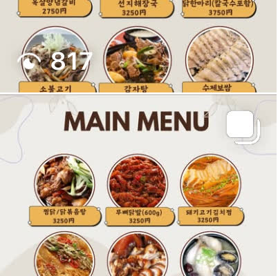
매콤 볶음류
붉은 양념 볶음 반찬
고추장 베이스 색감이 강한 메인형 반찬. 매콤·감칠맛 중심 선택지.
요청하신 대로 원본 화면을 통으로 쓰지 않고, 각 반찬 컷을 개별 카드로 분리했습니다. 카드마다 메뉴 성격과 비주얼 포인트를 넣어 바로 고르기 쉽게 구성했습니다.
* 이미지 기준 비주얼 분석명으로 구성

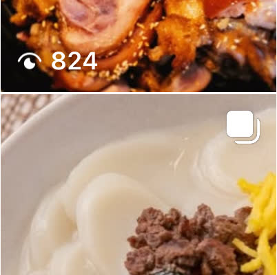
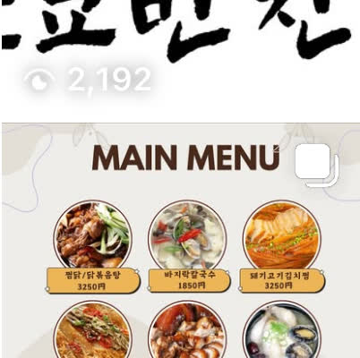
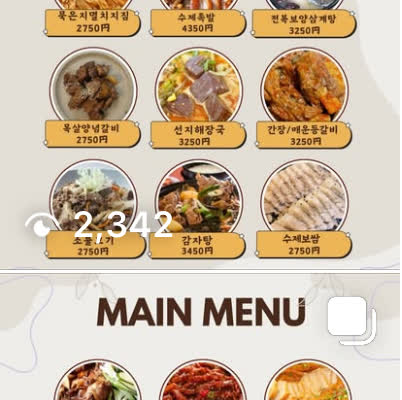
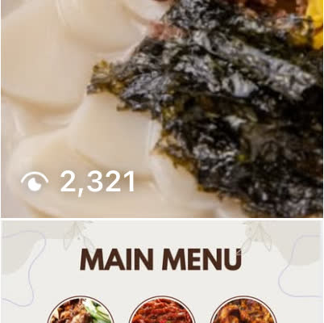
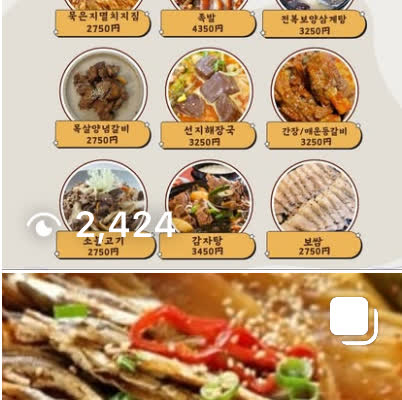
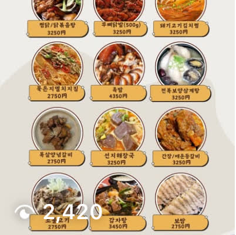
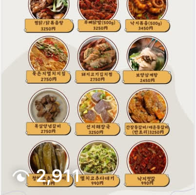
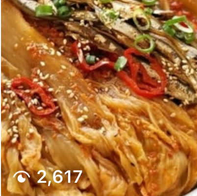
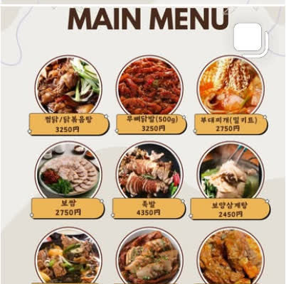
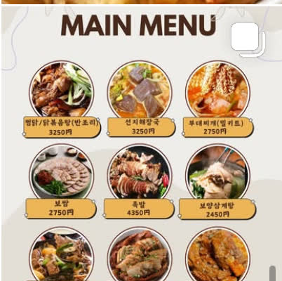
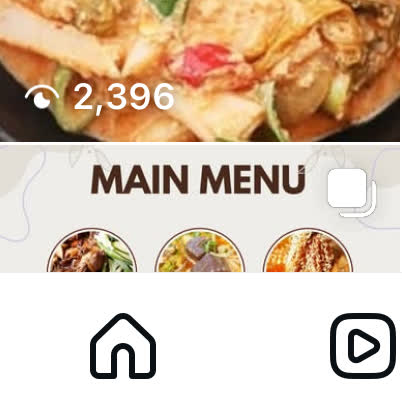
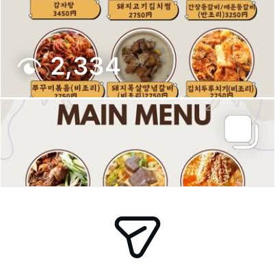
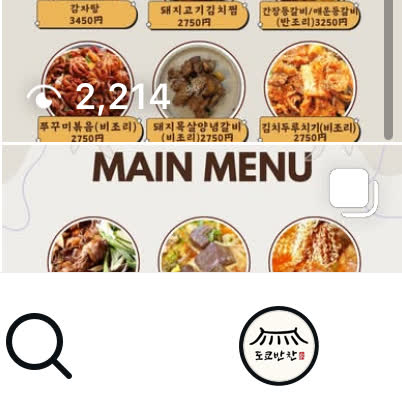
Instagram @tokyo_banchan · Phone +81-00-0000-0000